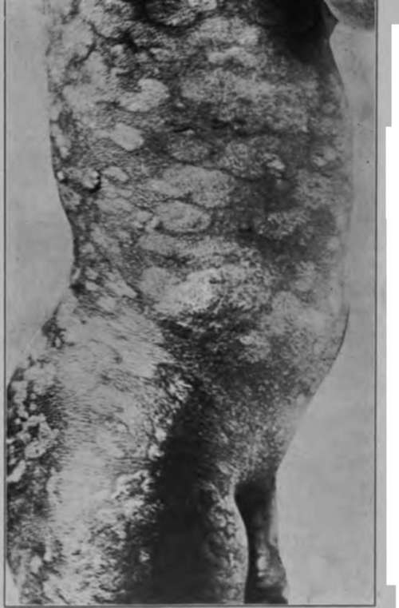

Chapter XIV. Lymphomata
Description
This section is from the book "Skin Cancer", by Henry H. Hazen, A.B., M.D.. Also available from Amazon: Skin Cancer.
Chapter XIV. Lymphomata
The subject of lymphoid and myeloid tumors has long confused not only dermatologists, but clinicians and pathologists as well. It seems to the author, however, that certain broad principles are now clear, and that all that is needed is to study the details. Adami's1 classification of the lymphoid and myeloid diseases is possibly the most satisfactory one, inasmuch as it is the simplest and most comprehensive, although he does not follow Tiirck* in dividing lymphomatoses into leukemic and aleukemic, and pointing out that certain of the former type should become converted into the latter variety, which should always be borne in mind.
The following group of diseases is associated with cutaneous tumors :
Myelomata.
Multiple myelomata.
Myeloid leukemia.
Chloroma. Lymphomata.
Ilodgkin's disease.
Lymphatic leukemia.
In addition to these general diseases, lymphomatous processes may be at first localized in the skin and only later involve the other blood-producing organs. The primary lymphatic diseases involving the cutis are simple lymphomata, mycosis fungoides, and lymphodermia perniciosa. The general field has been reviewed by the author* in two recent articles, one in association with Strobel,* in which there is a full discussion of the problems here encountered as well as a complete bibliography.
Multiple Myelomata
Two cases of multiple myelomata showed cutaneous manifestations. The patient of Spiethoff's showed only an erythrodermia, but Bloeh's5 case had definite tumors of 5 cm. size.
*Adami: Principles of Pathology, i.
*Turck: Wien. klin. Wchnschr., 1903, xvi, 1073.
*Hazen: Jour. Cutan. Dis., 1911, xxix, 621.
*Strobel and Hazen: Jour. Cutan. Dis., 1911, xxix, 147.
*Bloch: Arch. f. Dermat. u. Syphil., 1910, xcix, 9.
Myeloid Leukemia
Only three cases of myeloid (splenomyelog-enous) leukemia showed tumors, although two or three others had various types of skin lesions. Hindenberg had under observation a woman aged 40 with a well-developed myeloid leukemia and a tumor of the leg 6 cm. in diameter, which was distinctly due to the leukemia. Eolleston and Fox* followed a patient aged 58 with an atypical myeloid leukemia and many nodules over the body. Bruus-gaard has had a case in which there were infiltrations of myelocytes in the subcutis.
Chloroma
In all, ten cases of chloroma showed cutaneous manifestations, five of these patients had tumors or nodules, usually of a greenish color-namely, the cases of Rosenblath, Bramwell, Hitsch-mann, Paltauf,* and Jacobaeus. The nodules were usually of small size, and freely movable upon the underlying tissues. The most characteristic thing was the greenish color.
Hodgkin's Disease
Hodgkin's disease still remains a fertile field for contention. After Reed's8 work appeared it was thought for a time that this malady was definitely established, and that it was characterized by a very definite histological picture. Cases have, however, been reported where a perfectly typical case of this trouble has developed into an equally typical leukemia, and Warthin* has shown that certain cases have the pathology of simple lymphomata, and not of the type described by Reed. In this disease the commonest skin manifestations are either bronzing or pruritus, but definite nodules or tumors may develop.
Lymphatic Leukemia
Lymphatic leukemia is fairly sharply divided into the acute and chronic forms, although there are, of course, transitional stages between these two varieties.
The patients suffering from acute leukemia frequently showed purpuric conditions of the cutis, a number of other cases showed either vesicles or urticaria, but seven cases showed either nodules or small tumors. These cases are described in the author's article as well as in the more recent one of Nanta*.
Patients suffering from the chronic form of lymphatic leukemia not infrequently show papules or vesicles upon the skin, but nine cases have shown either tubercular eruptions or fairly large tumors. As a rule, these lesions did not ulcerate, but one or two have done so. Thick subcutaneous infiltrations were not uncommon; these occurred usually upon the face, and often gave the patient a leonine expression, such as is seen in leprosy.
*Rolleston and Fox: Brit. Jour. Dermat., 1909, xxi, 377.
*Paltauf: Mracek's Handbuch der Hautkrankheiten, Wien., 1909, v.
*Reed: Johns Hopkins Hospital Reports, 1902, x. •Warthin: Osier's Modern Medicine, Phila., 1908, iv, 808. "Nanta: Ann. de Dermat. et de Syphil., 1912, iii, 572, 639, 694.
Lymphodennia Perniciosa
Lymphodermia perniciosa* is undoubtedly a transition stage between leukemia and mycosis fun-goides. Typical cases of this affection show an intensely itchy, generalized erythrodermia, that resembles a generalized squamous eczema. Later cutaneous and subcutaneous nodules and infiltrations develop, that may or may not ulcerate. The majority of these cases show a great increase in the white blood cells, the lymphocytes being the most numerous cells.
Mycosis Fungoides
Mycosis fungoides is one of the most interesting diseases encountered by the dermatologist. According to Crocker,* it appears in three different forms-first, where there is an antecedent dermatitis, usually eczematous in appearance (Fig. 58) ; second, where there are repeated attacks of lymphangitis leading to elephantiasis, and a later tumor formation; and third, where many tumors suddenly appear without an antecedent dermatitis, the "tumeurs d'emblee" of the French.
This disease has variously been classed with the sarcomata, the infectious granulomata, and the lymphomata. In a careful study of the condition, Strobel and the author decided that the malady was not a true sarcoma for the following reasons: that the cells do not infiltrate or metastasize in the way that sarcoma cells do because the tumors usually develop from placques or papules (which is certainly not true of the sarcomata) ; because of the spontaneous disappearance of the eruption at times; and because of the sudden changes that might take place in it. Nor did the histological picture appear to be the same.
They felt that it could not be an infectious granuloma because of the richness of mitotic figures in the mycosis cells; because the rete was not invaded by these cells; because there was no attempt on the part of the body to wall in these cells by an inflammatory exudate or fibrous tissue; because the clinical course and fatal termination of the disease are different from those of the granulomata; because there is no history of contagion or any especial geographical center for the trouble. In a certain number of cases lesions have been described in the bone marrow or in some of the internal lymphatic structures, never elsewhere, which could hardly be true of the granulomata.
They especially felt that the disease should be classed with the lymu phomata because of the histology of the growths, the lesions consisting of lymphoid cells; because the disease has the same general characteristics as many others of the lymphoid and myeloid series -namely, that it usually occurs in males past 49 years of age; that the average duration is two to five years, and that death invariably comes; that there is a secondary anemia, and that the lymphocyte count may be very high, usually showing an increase in the large mononuclear cells; and that a typical leukemia may develop as in the case reported by Pardee and Zeit;13 and, lastly, that there are direct transitional stages between the leukemias and mycosis fungoides, as evidenced by the conditions known as lymphodermia perniciosa. Also, it should be remarked that the same remedies have a beneficial effect here as in the other members of the group-namely x-ray and arsenic-and also intercurrent infections, especially erysipelas. They, therefore, feel that mycosis fungoides is a member of the group of diseases usually called lymphomatous, and that, in the sense of Tiirck, it is an aleukemic lymphomatosis, that may, however, become leukemic.
Kaposi: Diseases of the Skin, New York, 1895. "Crocker: Diseases of the Skin, 3d ed., Phila., 1905.
Fig. 58.-Mycosis fungoides. (Strobel and Hazen.-Courtesy of Journul of Cutaneous Diseases).
Diagnosis
In this entire group of troubles diagnosis should not be difficult if it is possible to study the patient. The laboratory methods of diagnosis are extremely valuable, for the diagnosis of leukemia can always be made by a microscopical examination of the blood, if it be borne in mind that a victim of leukemia may have an occasional aleukemic period. Mycosis fungoides can be diagnosed by the study of a section of the skin. Even the premycotic patches have a very definite histology, there being an infiltration of the subpapil-lary portion of the corium with lymphoid and an occasional endo-thelioid or plasma cell. Even the supposedly normal skin may show some of these changes. In multiple myelomata there is a large quantity of Bence-Jones bodies in the urine. A typical case of Hodg-kin's disease can be diagnosed by a histological study of a small lymphatic gland. The following conditions must be excluded; leprosy, sarcomata, sarcoids, fibroma molluscum, and small subcutaneous or cutaneous tumors of benign course, such as myomata or neuromata.
Treatment
The treatment is eminently unsatisfactory. Arsenic or the x-ray may alleviate the trouble for a time, but the author is not satisfied that any genuine cases belonging to this group have been cured, although there have been a few reports in the literature. He is inclined to feel that these cases probably belong to the Spiegler-Fendt type of sarcoid.
Benign Lymphomata
Not all lymphomata, however, are malignant, for Winfield* has recently reported a remarkable case of benign lymphomata occurring in a woman aged 75. The disease started six years before the report was made as two subcutaneous nodules over the left malar prominence, that were intensely itchy. Both tumors grew rather rapidly until they attained the diameter of about 2 cm., but they did not coalesce, nor did the skin over them ulcerate. A little later similar tumors began to appear on other portions of the face, and upon the body and limbs as well. Careful physical and laboratory investigations yielded no information as to disease in any of the internal organs. Histological examination of the lesions showed a nodule, well walled in and not invading the epidermis, the cells being of a small, round character, greatly resembling those of a small round-celled sarcoma, or of a lymphosarcoma; they were, however, later decided to be typical lymphoid cells. Some of the growths involuted under the administration of arsenic.
*Pardee and Zeit: Jour. Cutan. Dis., 1911, xxix, 7. "Winfleld: Jour. Cutan. Dis., 1913, xxxi, 246.
Newberger reported a somewhat similar case in 1892, where there were likewise small, hard growths in the corium, without any other symptoms.
In addition to the articles mentioned above, Amdt's13 should be read by any one who is interested.
*Arndt: Jour. Amer. Med. Assn., 1914, lxiii, 1268.
Continue to:
Tags
bookdome.com, books, online, free, old, antique, new, read, browse, download